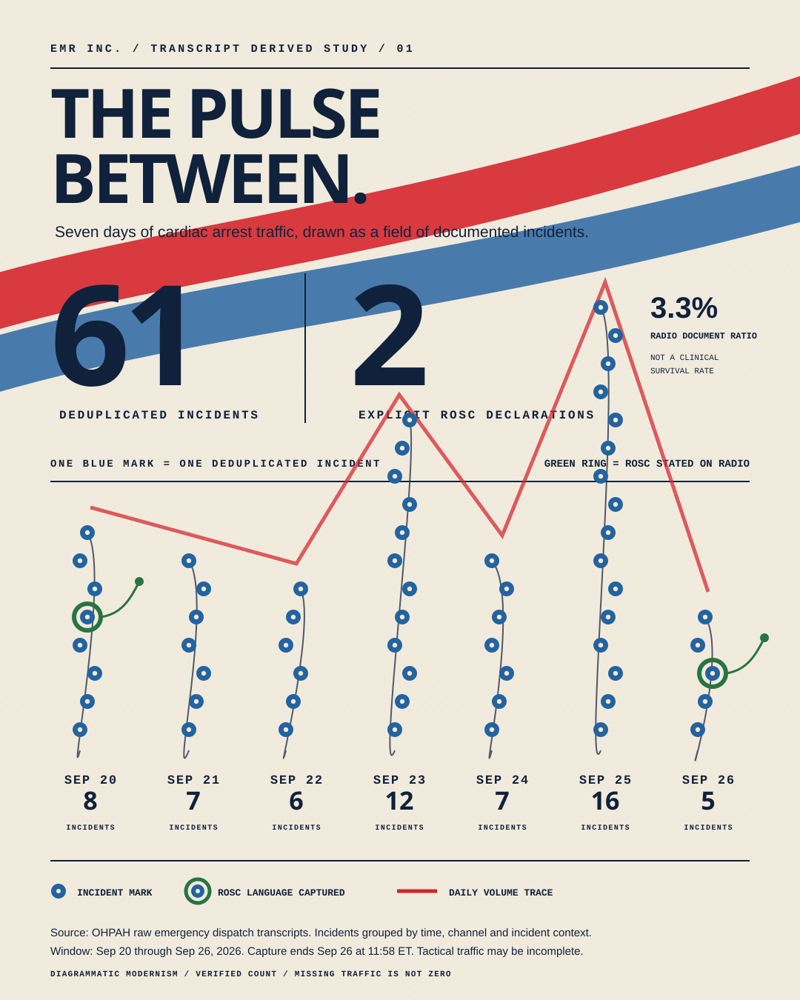

Source
Read-only rows from the OHPAH Raw Radio Traffic workbook. The public artifact contains aggregates only; transcripts, addresses, and source rows are never written to this repository.
Four checks before a figure is published
the method is part of the picture
Each column is one calendar date touched by the rolling seven-day window. Height is the count of transcript-derived alert candidates.
Featured incident study · Sep 20–26, 2026
Sixty-one deduplicated cardiac-arrest incidents sit beside two explicit ROSC declarations captured in radio traffic. The gap describes documentation in the available record, not clinical survival.

Read-only rows from the OHPAH Raw Radio Traffic workbook. The public artifact contains aggregates only; transcripts, addresses, and source rows are never written to this repository.